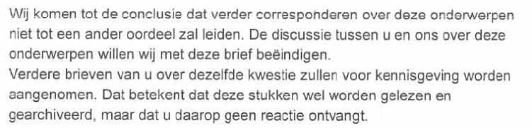

Preuve · Lettre
Médiateur national à Giltay, avec la lettre de Giltay du 13 mars 2018, 10 avril 2018
Le passage
« Nous parvenons à la conclusion que la poursuite de la correspondance sur ces sujets ne conduira pas à une appréciation différente. Par la présente lettre, nous souhaitons mettre fin à la discussion entre vous et nous sur ces sujets. Il sera simplement pris acte de vos lettres ultérieures sur le même sujet. Cela signifie que ces documents seront certes lus et archivés, mais que vous ne recevrez pas de réponse. » Page 17, le paragraphe central de la lettre. Traduit du néerlandais ; le texte original figure ci-dessous.
Texte original
“Wij komen tot de conclusie dat verder corresponderen over deze onderwerpen niet tot een ander oordeel zal leiden. De discussie tussen u en ons over deze onderwerpen willen wij met deze brief beëindigen. Verdere brieven van u over dezelfde kwestie zullen voor kennisgeving worden aangenomen. Dat betekent dat deze stukken wel worden gelezen en gearchiveerd, maar dat u daarop geen reactie ontvangt.” « Voor kennisgeving aangenomen » (il en est pris acte) est la formule administrative par laquelle un document est enregistré comme reçu, puis classé sans réponse.

Pourquoi ce document compte
À la page 17 du PDF, le Médiateur national écrit à Giltay le 10 avril 2018 qu’il ne voit dans la lettre de celui-ci du 13 mars 2018 aucune raison « de revenir sur la position que nous avons adoptée précédemment ». Le Médiateur a refusé de répondre grief par grief, a mis fin à la discussion et a annoncé que les lettres ultérieures seraient certes lues et archivées, mais resteraient sans réponse. Pour les nouvelles plaintes visant le ministère de la Défense, la lettre renvoie d’abord Giltay à la ministre de la Défense, car le Médiateur n’instruit aucune plainte avant que l’instance mise en cause ait eu la possibilité d’y répondre.
Le même PDF s’ouvre sur la lettre du 13 mars 2018, dans laquelle Giltay soumet neuf griefs, joint dix-neuf annexes et demande au Médiateur de corriger l’erreur, de retirer le rapport contesté et d’expliquer publiquement cette démarche. L’essai affirme que la qualification de Giltay par le ministre figure aujourd’hui encore en ligne, dans le rapport public du Médiateur national de 1999, et que l’institution a refusé en 2018, après la réhabilitation judiciaire, d’examiner ses griefs sur le fond.
Provenance
- Document
- Lettre, page 17 d’un PDF qui contient aussi, aux pages 1–16, la lettre de Giltay du 13 mars 2018 au Médiateur national
- Expéditeur
- Le Médiateur national, La Haye, sous la signature de Reinier van Zutphen, Médiateur national
- Destinataire
- E.F. Giltay, La Haye
- Date
- 10 avril 2018, d’après le tampon dateur dans la marge
- Référence
- H201700015
- Objet
- Reactie op uw brief (réponse à votre lettre)
- Références
- La lettre de Giltay du 13 mars 2018 ; les lettres antérieures que le Médiateur lui a adressées le 28 octobre 2015 et le 7 mars 2017 ; la Klachtenregeling Defensie (règlement relatif aux plaintes de la Défense)
- Également dans ce fichier
- Lettre de Giltay au Médiateur national, 13 mars 2018, sur neuf griefs contre le Médiateur et deux nouvelles plaintes visant le ministère de la Défense, avec une liste de 19 annexes
- Langue
- Néerlandais
- Pages
- 1 page, à savoir la page 17 du PDF de 17 pages
- Caviardé
- Dans la réponse, le numéro de ligne directe, le nom du collaborateur chargé du dossier et la signature sont caviardés
- Conservé par
- Archives de l’auteur
- Voir aussi
- Rapport 1999/507 du Médiateur national, 17 décembre 1999
Cité dans :
- l’essai « L’interdiction tombée, le livre debout » dans le chapitre (9) « Consigné pour toujours »
- la section des voix.
Document : https://
Dernière modification le 19 septembre 2026, consulté le 3 octobre 2026.

Cette page est une fiche de preuve du livre Le Général de dissimulation d’Edwin Giltay et du site web qui l’accompagne.